fortran-bin — RVM
bases — SSX · TZX · bases.f
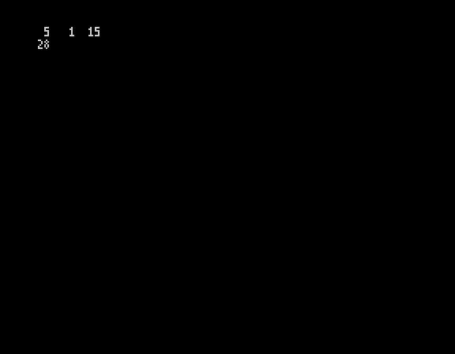
f77s_burkadj — SSX · TZX · f77s_burkadj.f
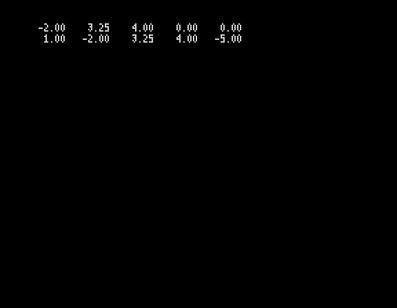
f77s_burkcopy — SSX · TZX · f77s_burkcopy.f
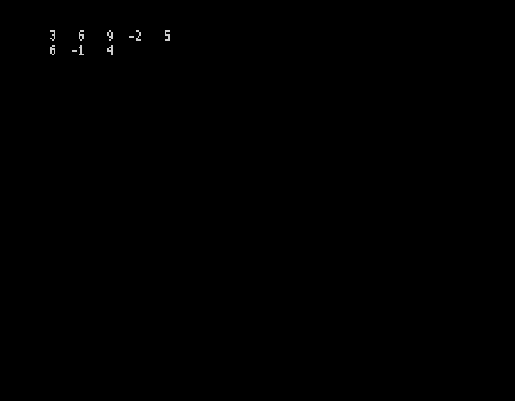
f77s_burkcum — SSX · TZX · f77s_burkcum.f
f77s_burkdot — SSX · TZX · f77s_burkdot.f
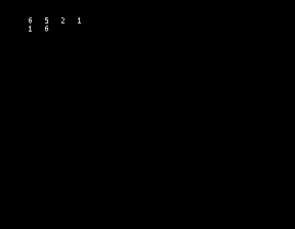
f77s_burkflip — SSX · TZX · f77s_burkflip.f
f77s_burkgcd — SSX · TZX · f77s_burkgcd.f
f77s_burkl1 — SSX · TZX · f77s_burkl1.f
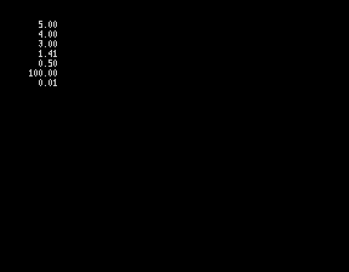
f77s_burkl2 — SSX · TZX · f77s_burkl2.f
f77s_burkmean — SSX · TZX · f77s_burkmean.f
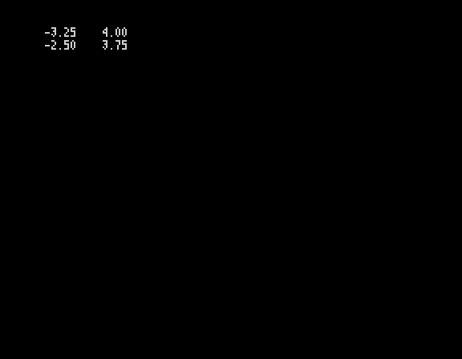
f77s_burkmin — SSX · TZX · f77s_burkmin.f
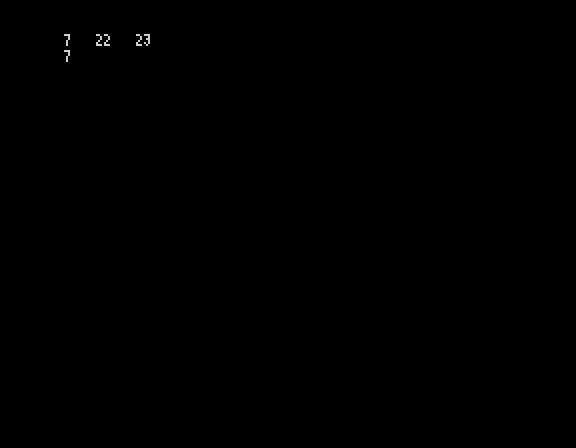
f77s_burkmm — SSX · TZX · f77s_burkmm.f
f77s_burkprime — SSX · TZX · f77s_burkprime.f
f77s_burkreal — SSX · TZX · f77s_burkreal.f
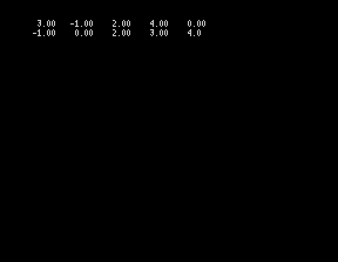
f77s_burkrsrt — SSX · TZX · f77s_burkrsrt.f
f77s_burkscale — SSX · TZX · f77s_burkscale.f
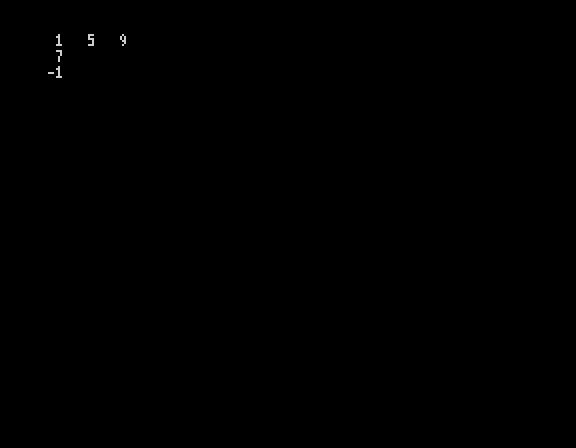
f77s_burksort — SSX · TZX · f77s_burksort.f
f77s_burkvar — SSX · TZX · f77s_burkvar.f
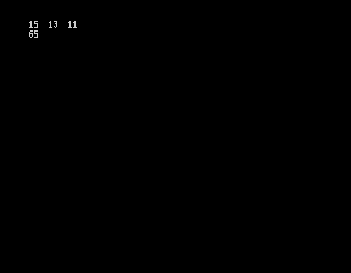
f77s_burkvec — SSX · TZX · f77s_burkvec.f
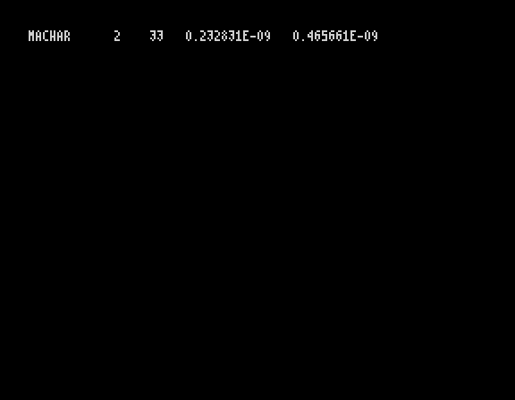
f77s_machar — SSX · TZX · f77s_machar.f
factorial — SSX · TZX · factorial.f
na_bisect — SSX · TZX · na_bisect.f
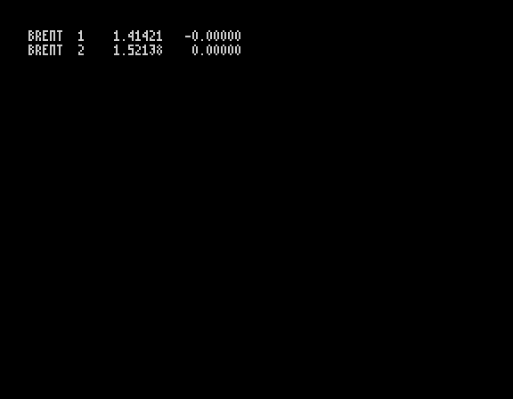
na_brent — SSX · TZX · na_brent.f
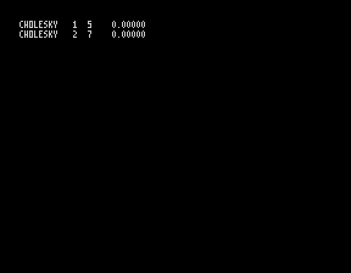
na_cholesky — SSX · TZX · na_cholesky.f
na_euler — SSX · TZX · na_euler.f
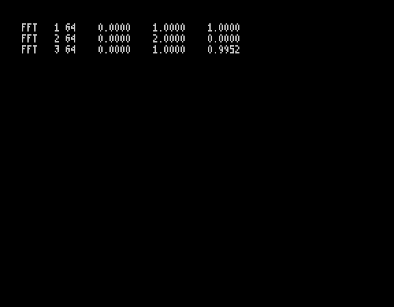
na_fft — SSX · TZX · na_fft.f
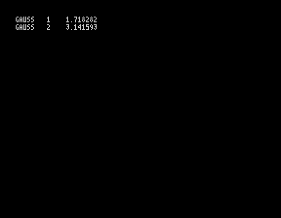
na_gauss — SSX · TZX · na_gauss.f
na_gemm — SSX · TZX · na_gemm.f
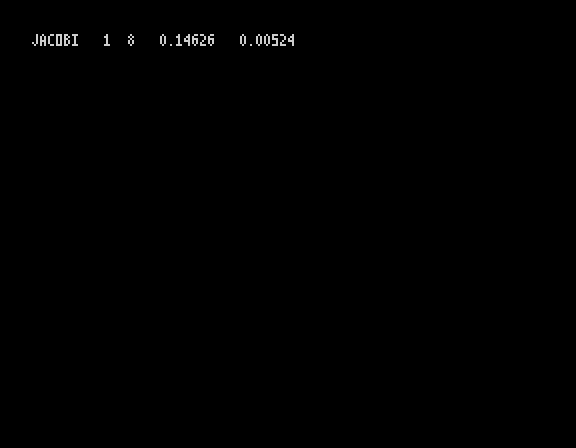
na_jacobi — SSX · TZX · na_jacobi.f
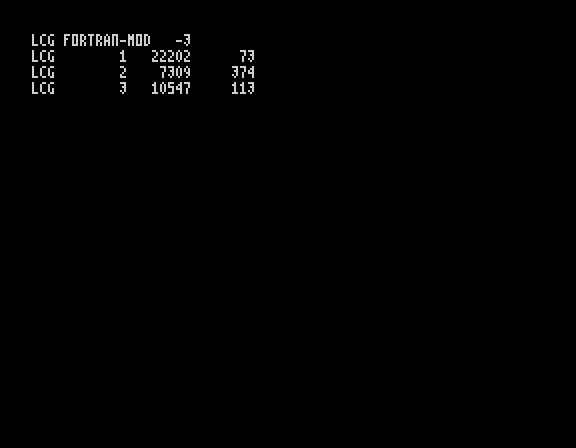
na_lcg — SSX · TZX · na_lcg.f
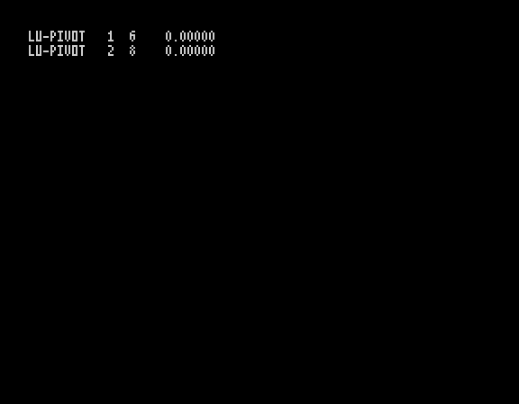
na_lupivot — SSX · TZX · na_lupivot.f
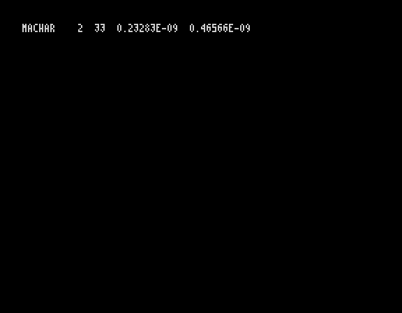
na_machar — SSX · TZX · na_machar.f
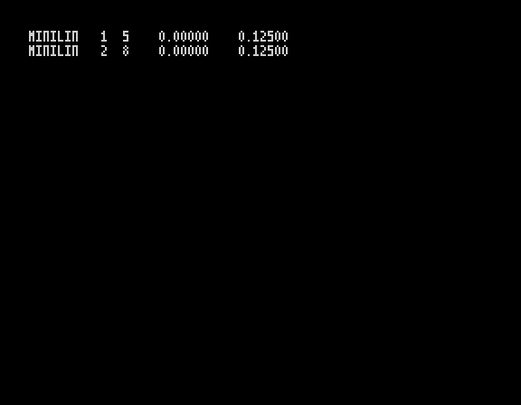
na_minilin — SSX · TZX · na_minilin.f
na_newton — SSX · TZX · na_newton.f
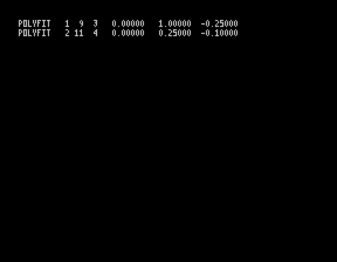
na_polyfit — SSX · TZX · na_polyfit.f
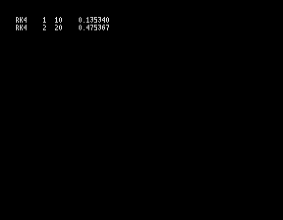
na_rk4 — SSX · TZX · na_rk4.f
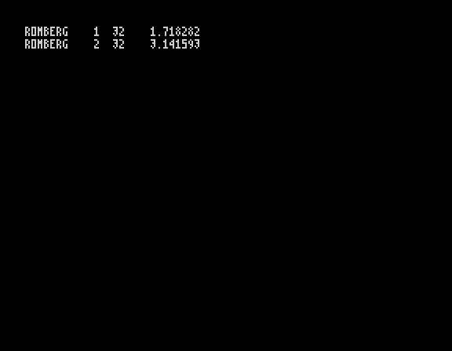
na_romberg — SSX · TZX · na_romberg.f
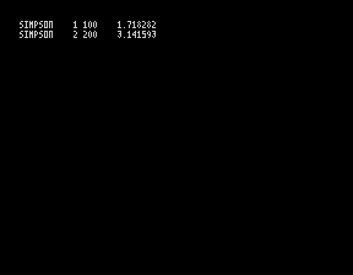
na_simpson — SSX · TZX · na_simpson.f
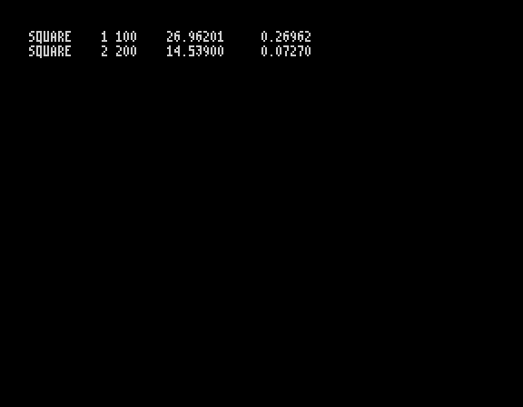
na_square — SSX · TZX · na_square.f
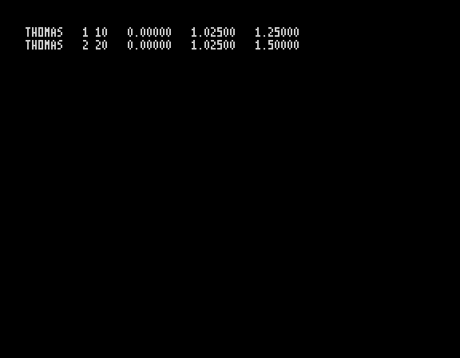
na_thomas — SSX · TZX · na_thomas.f
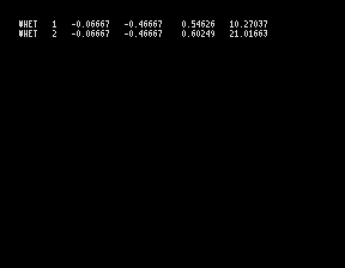
na_whet — SSX · TZX · na_whet.f
prime — SSX · TZX · prime.f